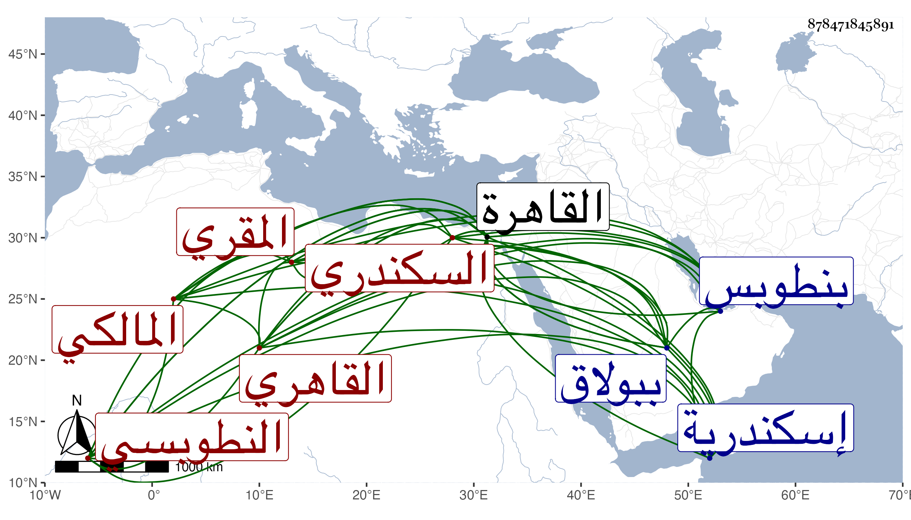

0902Sakhawi.DawLamic.ITO20230111-ara1.EIS1600.878471845891
Biography ID: 878471845891
389
عبد الوهاب بن علي بن حسن التاج بن الخطيب نور الدين النطوبسي ثم القاهري المالكي المقري نزيل الظاهرية القديمة ويعرف في بلده بابن المكين وفي القاهرة بالتاج السكندري لمكثه فيها مدة . ولد في سنة خمس عشرة وثمانمائة تقريبا بنطوبس الرمان بالمزاحميتين ونشأ بها فحفظ القرآن عند خطيبها وشيخها الشمس بن عرارة المقري تلميذ ابن يفتح الله وجود عليه ، ثم تحول مع والده إلى إسكندرية فأقام بها عند خطيب جامعها الغربي النور بن يفتح الله المالكي المقري المشار إليه وحفظ الشاطبيتين وألفية النحو وغالب المختصر في فروعهم وعرض بعض محافيظه على قاضيها الجمال الدماميني وغيره وتلا بالسبع إفرادا وجمعا على ابن يفتح الله المذكور ثم انتقل مع والده إلى القاهرة وقد قارب العشرين فنزل في قاعة الخطابة من الزمامية بحارة الديلم وأخذ القراءات السبع أيضا عن التاج بن تمرية والشهاب السكندري وقرأ عليه التيسير والعنوان وناصر الدين بن كزلبغا بل تلا عليه ختمة أخرى للثلاث تكملة العشر وكذا أخذ السبع عن الزين طاهر والشمس بن العطار ولكن لم يكمل عليهما وتفقه بالزينين عبادة وطاهر وأبي القسم النويري والبدر بن التنسي وآخرين كأبي الجود وعنه أخذ الفرائض والآبدي وعنه أخذ العروض والعربية وغيرهما بل أخذ العربية أيضا عن الشمني قرأ عليه الألفية ولازمه في الأصلين وغيرهما وكذا أخذ كثيرا منها ومن غيرها عن التقي الحصني والشرواني وابن حسان وانتفع به كثيرا والأمين الأقصرائي وعليه قرأ في تفسير البيضاوي إلى قوله وندخلهم ظلا ظليلا وابتدأ بالتاج التوعك وقرأ على شيخنا في شرح النخبة وجميع الشاطبية من حفظه في مجلس واحد قراءة لم أسمع فيها أفصح منه ولا أتقن وسكت ليتنفس فبادر بعض الحاضرين وفتح عليه لظنه التوقف وتألم شيخنا لمبادرته للرد وصرح بذلك وكذا أخذ عن شيخنا غير ذلك وقرأ في شرح ألفية العراقي على المناوي وكان يراجعني في أشياء منه وسمع جميع البخاري على الشيوخ المجتمعين بالظاهرية محل سكنه وكذا سمع على غيرهم كالعز الحنبلي وكان عظيم الرغبة في ذلك بل لا زال يدأب في التحصيل على طريقة جميلة حتى برع وشارك في الفضائل وتميز في القراءات بحيث أخذها عنه جماعة منهم ناصر الدين الأخميمي فإنه تلا عليه للسبع إفرادا ثم جمعا لكنه لم يكمل ختمتها والمحب بن المسدي والسراج عمر النجار ومن الأتراك قانم الأشقر وبردبك ناظر القرافتين وأخو طوخ الزردكاش وجانم الخازنداري جانبك بل والظاهر خشقدم حين كان أمير سلاح مسئولا في ذلك وعرض عليه حينئذ أن يكون امامه فما وافق فلما استقر في المملكة لزمه بذلك فاشترط عليه عدم الطوق وركوب الخيل فما خالف وزاد معلومه عن رفقائه وخالف العادة في كون الإمام حنفيا وأقبل عليه جدا وراسل العلم البلقيني في رجب منها حين مرض موته أن يكون هو النائب عنه في الخطابة مدة توعكه لمزيد رغبته في الصلاة خلفه فما أمكنته المخالفة وقدرت وفاة القاضي عن قرب فخطب بعده أيضا حتى استقر بالمناوي وكأنه أيضا كان سمع خطابته فإنه كان استقر به الزين الاستادار في جامعه ببولاق أول ما فتح بتوسل الزين عنده بقاضي مذهبه البدر التنسي حتى أذعن وصلى القاضي يومئذ وراءه وكذا استقر به الظاهر في مشيخة المحدثين بالظاهرية محل سكنه عقب ناصر الدين بن السفاح وكان باسمه قبل ذلك فيها نصف مشيخة القراء تلقاه عن البرهان الكركي وحج مع الرحبية صحبة جانم المذكور بإلحاحه عليه وحلفه بأن مصروفه من حل وقرأ هناك في الفقه وغيره على قاضي المالكية بها المحيوي عبد القادر وأذن له بالإفتاء والتدريس وكان خيرا بهجا نيرا متحريا صادق اللهجة سليم الصدر لونا واحدا مديما للعبادة والتلاوة والتهجد والاشتغال والمذاكرة فاضلا مقرئا حسن الأداء عريض الصوت محبا في الفائدة غير مستنكف بحملها عن أحد وأقام في ابتدائه أعزب نحو أربعين سنة واستعمل ما ينفعه في كسر الشهوة إلى أن ألزم بالتزويج واضطر لاستعمال نقيضه ولم يزل في ازدياد من الخير حتى مات في صبيحة يوم الثلاثاء ثاني عشر ذي القعدة سنة ثمان وستين عن ثلاث وخمسين سنة وصلى عليه في يومه ودفن بحوش سعيد السعداء بالقرب من أبي الجود والأبدي وغيرهما من شيوخه وتأسف أهل الخير على فقده ونعم الرجل كان فقد كنت أحبه في الله رحمه الله وإيانا .
